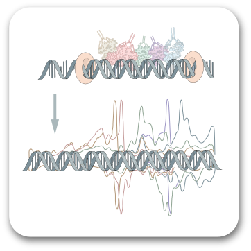
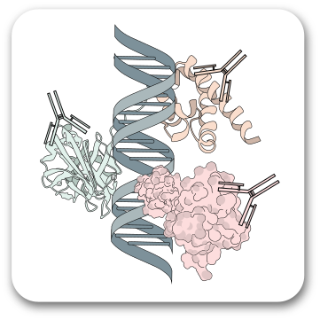

<div class="container">
  <div class="Resources-container">
    <h3>Resources</h3>
    <hr />
    <!-- Section -->
    <div class="row margin-top-40">
      <div class="col-md-3"></div>
      <div class="col-md-9"><h4>YEP</h4></div>
    </div>
    <div class="row">
      <div class="col-md-3 margin-top-20">
        
      </div>
      <div class="col-md-9">
        <div>
          <div class="publication" id="YEP">
            <p>
              Gene regulation is central for life to function in a wide range of
              earth’s environments. The long-term goal of this research project
              is to understand at single bp resolution the molecular
              organization (architecture) of proteins assembled on the
              Saccharomyces (budding yeast) genome. Budding yeast represent an
              ideal model cellular system due to its simple genome, ease of
              genetic manipulation, and conservation of transcription and
              chromatin regulators with human cells. By understanding the
              precise molecular architecture of epigenomes, we gain a holistic
              view of genome regulation mechanisms. This project will build on
              <a class="resource-link" href="https://www.ncbi.nlm.nih.gov/pubmed/33692541/">
                our published set <i class="fas fa-external-link-alt"></i> </a
              >of genome-wide ChIP-exo data that comprehensively measures the
              yeast epigenome consisting of over 400 different proteins and has
              revealed distinct architectures for inducible versus constitutive
              gene expression. This expansion will involve understanding how
              epigenomes are reprogrammed by environmental signals.
            </p>
            <p>
              Two broad classes of reprogramming will be examined: acute stress
              responses (e.g., heat shock and oxidative stress) and long-term
              unfolding of developmental pathways (e.g., starvation responses)
              brought on by chronic stress. Responses to acute stress reveal
              molecular architectures that pre-exist in the cell and then
              re-organize within a few minutes of sensing extracellular
              signaling. These events are typically transient and so must be
              captured upon reaching their temporal maxima. In contrast,
              developmental pathways unfold over hours in yeast and typically
              rely on de novo synthesis of gene-specific transcription factors.
              This project will map the precise positional organization of
              hundreds of epigenomic components in response to heat shock and
              oxidative stress, and smaller set of components in response to a
              much broader array of acute stresses and developmental pathways.
            </p>
            <p>
              This project will define the functional interdependencies of
              epigenomic factors, with particular focus on the gene induction
              cofactors Mediator and SAGA. Relevant components of induced
              transcription will be rapidly depleted, then their impact on
              Mediator and SAGA binding to promoters examined. Other
              interdependencies, informed by the organization of epigenomes that
              will be defined during reprogramming/induction will also be
              examined. This research will also continue with its<a
                class="resource-link"
                href="https://pubmed.ncbi.nlm.nih.gov/27768892/"
              >
                previous biochemical reconstitution
                <i class="fas fa-external-link-alt"></i> </a
              >of chromatin organization across entire genomes, but now adding
              in components of the transcription machinery and their regulatory
              factors. A biochemical system will provide greater control over
              the experimental parameters and therefore provide greater insight
              into molecular mechanisms of gene control. Together this research
              will help provide a more thorough understanding of the protein
              architecture of gene regulation that should allow computational
              prediction of novel gene-environment interactions.
            </p>
            <!-- image grid or slideshow of screenshots -->
          </div>
        </div>
      </div>
    </div>

    <!-- Section -->
    <div class="row margin-top-40">
      <div class="col-md-3"></div>
      <div class="col-md-9"><h4>PCRP</h4></div>
    </div>
    <div class="row">
      <div class="col-md-3 margin-top-20">
        
      </div>
      <div class="col-md-9">
        <div>
          <div class="publication" id="PCRP">
            <p>
              Knowledge of where proteins bind along a genome informs us of how
              that genome including its genes are regulated. Such regulation
              forms the nexus of gene-environment interactions, and is therefore
              tied to cell fate, including mis-regulation that underlies cancer
              and other maladies. This project will build on our<a
                class="resource-link"
                href="https://pubmed.ncbi.nlm.nih.gov/34426512/"
              >
                prior work <i class="fas fa-external-link-alt"></i> </a
              >to precisely measure thousands of protein-DNA interactions for
              many hundreds of different proteins in many different human and
              mouse cell types. This will be done at single base resolution
              using ChIP-exo, a method that uses antibodies to purify specific
              proteins bound to DNA, an exonuclease to mark the 5’ end at the
              edge of where the protein directly or indirectly contacts DNA,
              then followed by DNA sequencing to identify its precise genomic
              binding location.
            </p>
            <p>
              The resulting positional organization of proteins (epigenomic
              architectures) will reveal fundamental mechanisms of gene
              regulation in different cell types. The proposed work will also
              measure relevant protein-DNA architectures in diseased medical
              specimens (e.g., patient-derived tumors and their in vitro
              organoid derivatives), with the goal of identifying specific
              epigenomic configurations that are predictive of treatment
              outcomes. In this way, more effective therapeutic treatment
              decisions can be made. Biological and medical discoveries from the
              thousands of resulting datasets will require a powerful
              computational data management and discovery platform, which will
              be built so that the scientific community can distill knowledge
              from data. This project is expected to define epigenomic
              protein-DNA architectures comprehensively at such high resolution
              that gene regulatory mechanisms become clear. These architectures
              will feed into pipelines for biomarker discovery that will help
              inform physicians and patients on therapeutic choices.
            </p>
            <!-- image grid or slideshow of screenshots -->
          </div>
        </div>
      </div>
    </div>

    <!-- Section -->
    <div class="row margin-top-40">
      <div class="col-md-3"></div>
      <div class="col-md-9"><h4>PEGR</h4></div>
    </div>
    <div class="row">
      <div class="col-md-3 margin-top-20">
        
      </div>
      <div class="col-md-9">
        <div>
          <div class="publication" id="PEGR">
            <p>
              Genomic projects are slowed by a general lack of end-to-end
              computational infrastructure support. This project will continue
              to develop our Platform for (Epi)Genomic Regulation
              <a class="resource-link" href="https://github.com/seqcode/pegr"
                >(PEGR) <i class="fas fa-external-link-alt"></i> </a
              >for broad community use in facilitating epigenomic discovery. Key
              components include: 1) a secure metadata development and
              management system that instills best practices of experimental
              rigor, reproducibility, and data sharing; 2) automated
              Galaxy-based epigenomic data processing pipelines with version
              control; 3) an interactive web-based data analysis portal that
              provides easy “wizards” and real-time stream-of-consciousness
              custom analyses; and 4) a means to disseminate data, tools,
              discoveries, and the platform. Other parts of the PEGR suit
              include graphically friendly interfaces for custom data analysis<a
                class="resource-link"
                href="https://pughlab.mbg.cornell.edu/scriptmanager/

                "
              >
                (ScriptManager) <i class="fas fa-external-link-alt"></i> </a
              >, and means to disseminate and visualize large-scale analyses
              through<a
                class="resource-link"
                href="http://pughlab.mbg.cornell.edu/stencil/"
              >
                STENCIL <i class="fas fa-external-link-alt"></i> </a
              >.
            </p>
            <!-- image grid or slideshow of screenshots -->
          </div>
        </div>
      </div>
    </div>
  </div>
</div>
